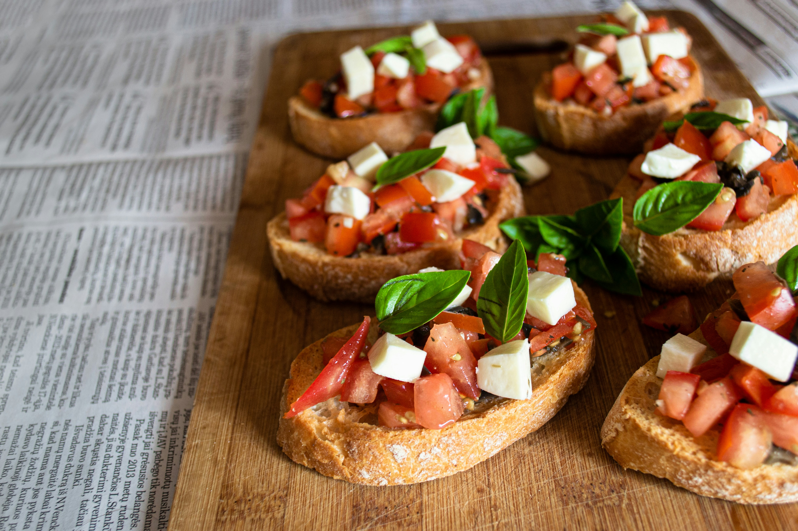

Bruschetta

Ingredients
- Bread
- Tomatoes
- Red onion
- Garlic
- Balsamic vinegar
- Basil
- Olive oil
Recipe
- Mix the onions, tomatoes, garlic, and basil. Add the balsamic vinegar and olive oil. Mix again and put away in the fridge for at least one hour.
- Cut the bread diagonally. Toast until light brown and serve with the mixture